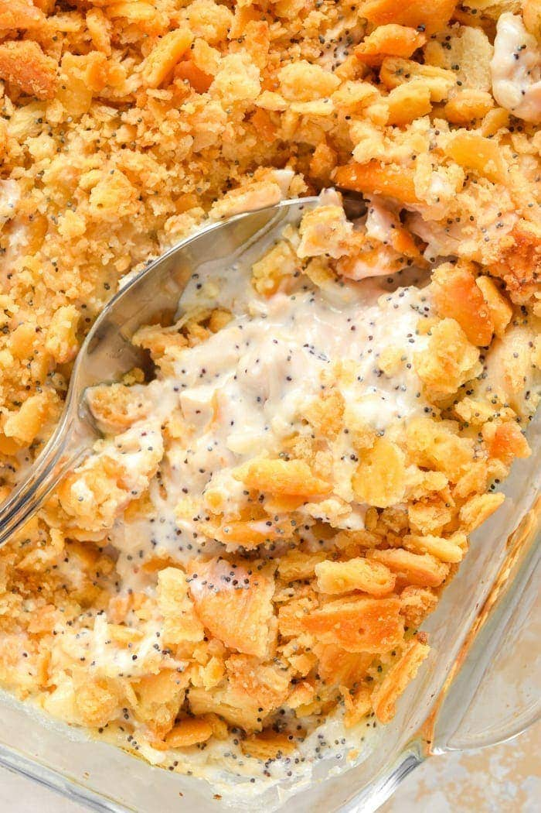

Poppy Seed Chicken

Description
Poppy seed chicken is a popular casserole dish in the Southern United States.
It is often served on top of rice.
Ingredients
- 5 cup shredded chicken
- 1 cup sour cream
- 2 10.75oz cans cream of chicken soup
- 2 cups crushed crackers
- 1/2 cup melted butter
- 1 tbsp poppy seeds
Steps
- Preheat oven to 350 degrees.
- Line casserole dish with shredded chicken.
- Stir cream of chicken and sour cream together.
Pour mixture over the chicken.
- Stir crackers, poppy seeds, and butter together.
Sprinkle on top of the chicken and sauce.
- Bake for 20-30 minutes until top is browned.